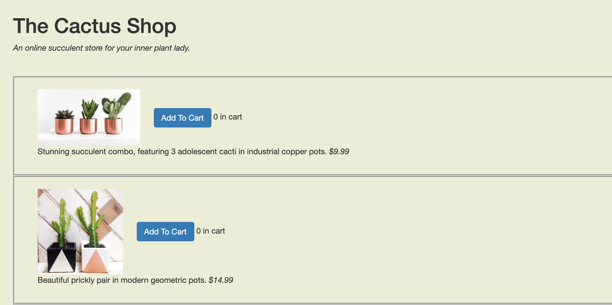
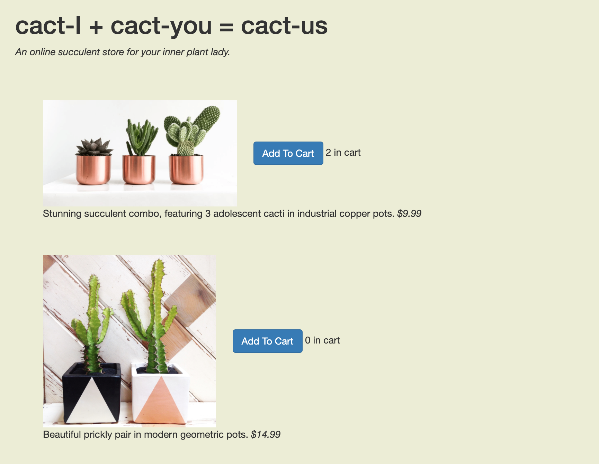

A/B Testing
The goal of this project was to evaluate two different UI designs via statistical analysis. I made two versions of a webpage and conducted an A/B test to determine how the designs impacted user behavior.
Site versions
Version A:
This version of the website has borders around each item that guide the eye across the width of the screen, rather than down the page.
Version B:
This version has larger images and no borders, which means the images will better draw the eye, but less will fit on the page at once. The title of the store is also changed to "The Cactus Shop."
Statistical Experiment
Data Collection
Both versions of the website were deployed at the same url, which has an equal chance of serving new users either version A or B of the page.
Testers were asked to add $150 worth of cacti to their cart. The amount of time they spent on the page, the items they clicked on, and whether the user navigated to the cart were all recorded.
The tests being conducted were specifically looking into how the interface impacted two metrics:
- The amount of time to complete the task
- Whether the user returned to the main page after navigated to the cart.
Cleaning the Logs
After the data was collected, I needed to process it in order to remove any outliers or other invalid data that would skew the results. Examples of logs that needed to be removed are from users who did not put anything in their cart or took hours to finish the task.
Once the data were cleaned, it was ready to be processed for the statistical tests.
Hypotheses
Before running the test, I needed to formally state my hypotheses about how the UI changes impacted the user's behavior.Time to Completion
I believe that larger images and removal of distracting borders will entice users to buy cacti more quickly.Null Hypothesis: The size of images and presence of borders does not impact the time a user spends on the webpage before choosing what to buy.
Alternative Hypothesis: Larger images and a lack of borders will decrease the amount of time the user deliberates before buying.
Return Rate
I believe that version B will lead to more users returning to the website.Null Hypothesis: The size of images and presence of borders does not impact whether a user will return to the website.
Alternative Hypothesis: Larger images and a lack of borders will make users more likely to return.
Findings
Note that there were only nine users for version A and three for version B.
Thus, for time to completion we reject the null hypothesis since we have statistically significant results that show the design for version B reduced the time for completion.
For return rate, we do not reject the null since the proportion of return was the same for both version A and B.
Takeaways
- In order to verify the results, the experiment should be replicated with a much larger number of users. Having less than ten users per version was not ideal, and potentially skewed the results.
- The users were all CS1300 students, not real cactus shoppers. Limiting the testing pool to people who would legitimately use the product would also make the results more acurrate.
- We learned that a minimalist design with larger, more eyecatching images can help convince users to buy items more quickly.
- Perhaps there is an optimal image size for the average user. More testing may yield the answer to this question.